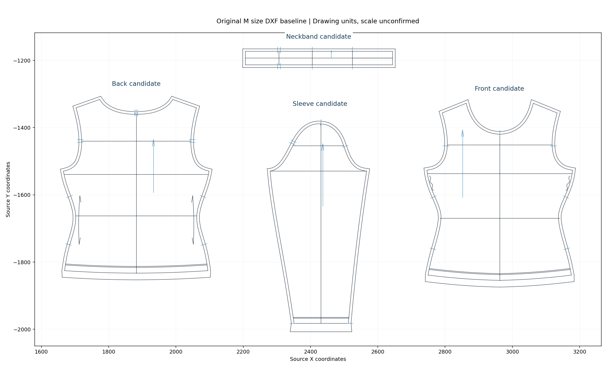
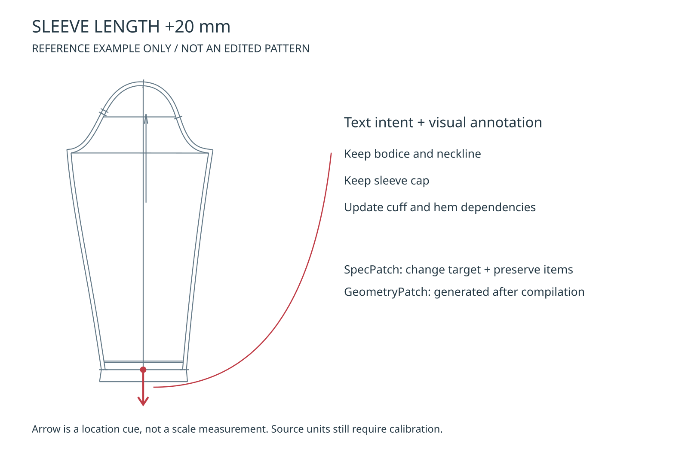

原型包准备
与使用示例
固定原样 DXF 与 S0 规格，
再把文字和视觉意图带入下一轮修改。
女士紧身长袖 T恤 · M码原样 · 包版本 v0.2
内含原始二维纸样、精简1D规格、完整几何绑定、二维预览与三个参考案例。

原始文件保留S0 已提取 · 示例未执行单位与部分裁片语义仍需核对
流程二
使用原型包改版
三个输入：
原型包 + 自然语言 + 二维视觉意图。
先编辑目标规格，记录 SpecPatch；再计算 GeometryPatch，应用到原型副本，核对新版二维纸样并重建同版次三维预览。
虚线表示后续待实现或连接的步骤。当前包不执行语义编译、DXF补丁或自动三维重建。
把意图写清楚，再修改纸样。
三个参考案例。
示例均未执行，不是新的改版指令。
只将袖子加长2厘米
以原型包中的原样为基准，两只袖子分别加长2厘米；衣身、领口、领条和袖山保持原样。
更新袖长目标，选择 ADJUST_LENGTH，并保留衣身、领口与袖山。执行时联动袖口、袖侧缝和折边。

先记录体验目标
明确不适的动作、位置和允许变化的部分。信息不足时，操作序列保持空，不自动解释为整体加大或固定加深袖窿。
参考示例，尚未执行。
查看当前示例的预期规格差异
正在读取参考文件…
一份原型，连同它的依据。
推荐整包下载。
精简规格与完整几何需要配套保存。
原型包 P0 v0.2DXF、S0、预览、规则来源、参考案例和检查记录↓
原型二维 DXF原始文件，保留坐标、中文与纸样标记↓
原型1D规格 S0精简根文件，供人和模型读取修改意图与参数↓
完整几何与源文件绑定原曲线顶点、裁片候选与稳定对象引用↓
文件校验清单逐文件摘要；原始 DXF、PRJ、EMF 保持原字节↓
包内目录与使用前的核对项
source/ 保存原件；design-spec.json 引用 prototype-spec.json；preview/ 保存二维预览；examples/ 保存文字、图示和预期规格差异；rules/ 保存规则原件；workflows/ 保存两条流程图。
文件没有声明原图单位。净毛样、部分裁剪数量、缝合方向、刀口关系与最终面料仍需核对。三维外观预览与实体合身分别判断；本包未修改原纸样，也没有输出新款式的三维模型。
下载包检查记录查看精简 S0 规格
正在读取规格文件…
规格基线保持 s0；包版本 v0.2 是资料包版本。